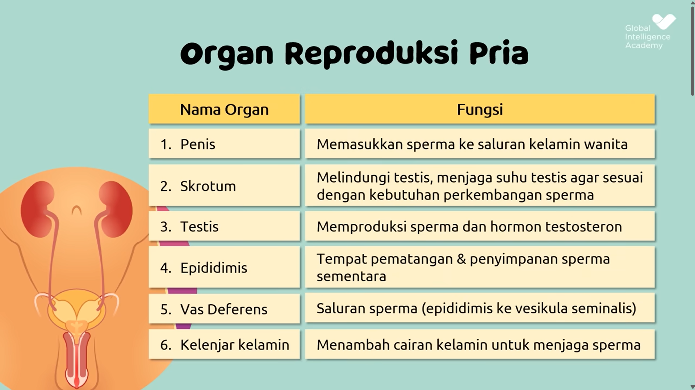
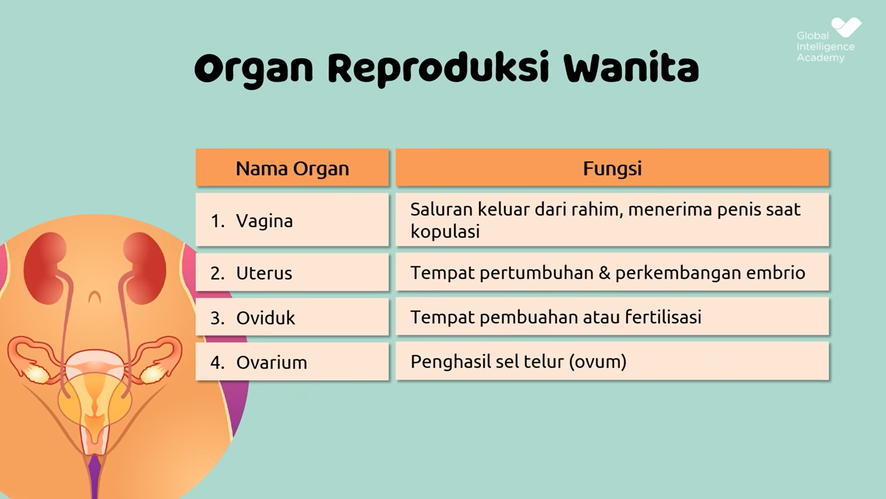
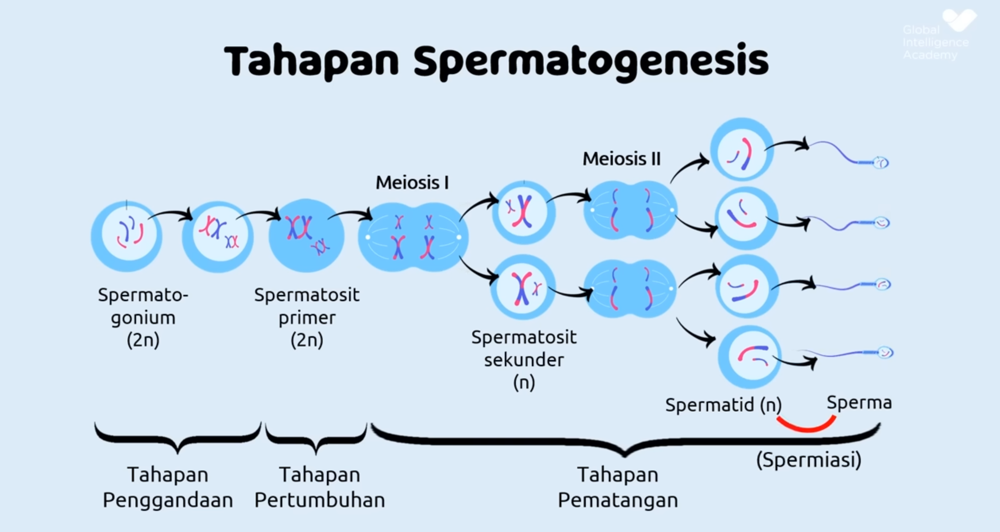
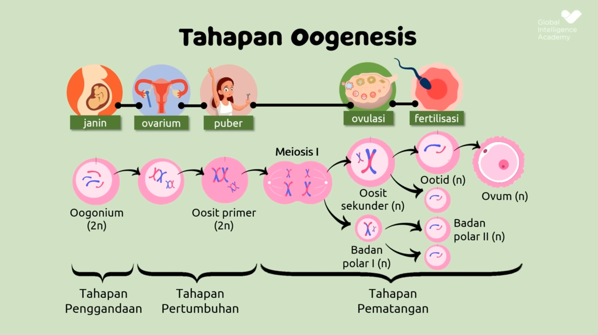
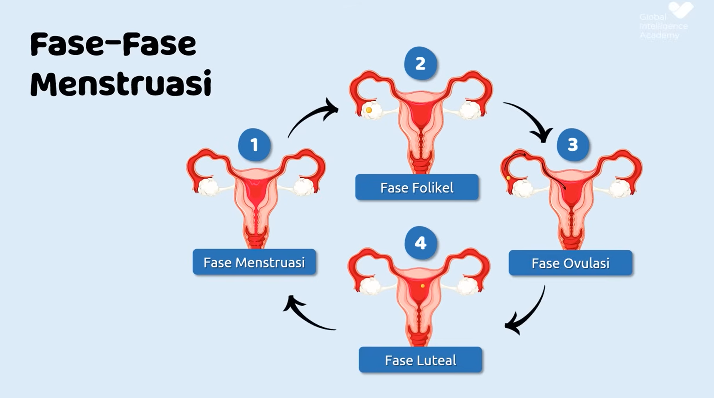
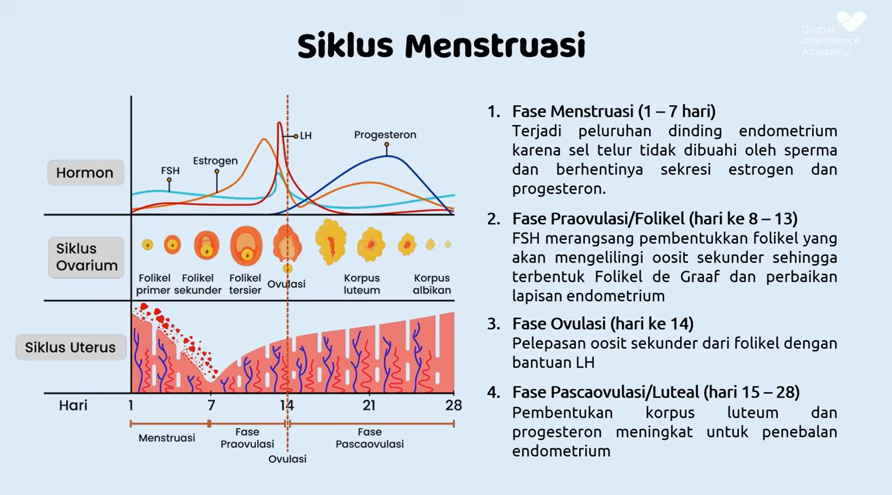
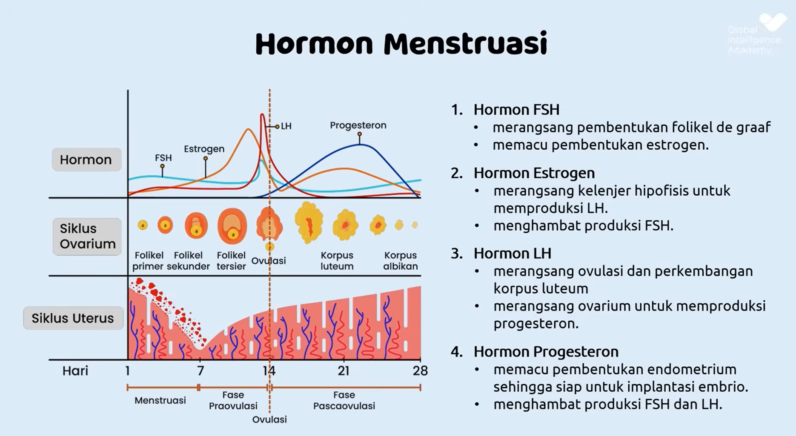
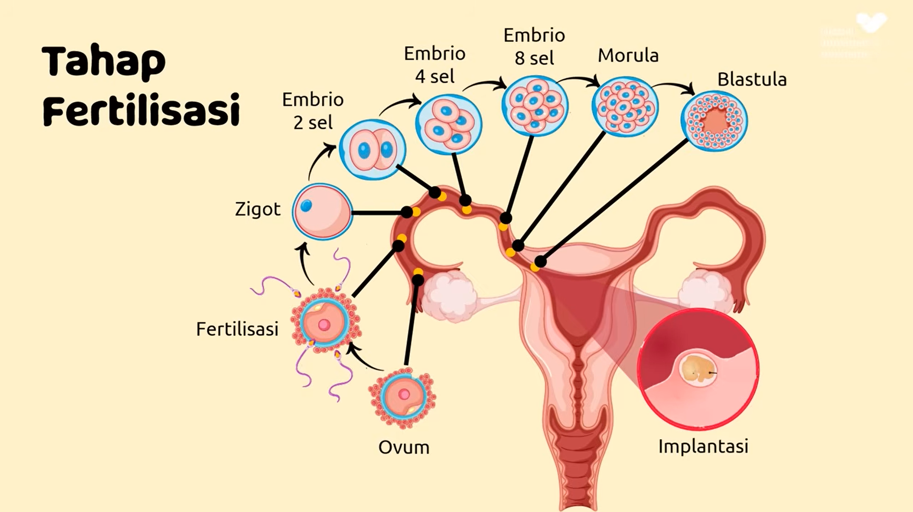
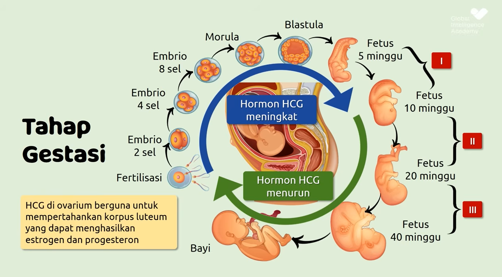
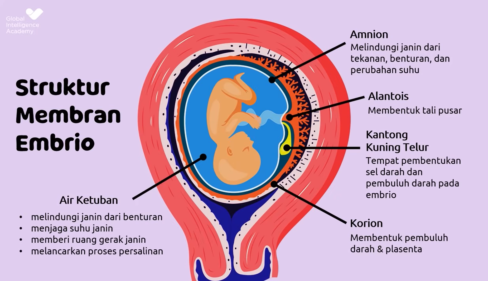

Biologi SMA
Hormon dalam Reproduksi Manusia
- A. Sistem Reproduksi
- 1.1 Sistem Reproduksi Pria
- 1.2 Sistem Reproduksi Wanita
- B. Mekanisme Pembentuka Gamet
- 2.1 Spermatogenesis
- 2.2 Oogenesis
- C. Menstruasi
- 3.1 Fase-Fase Menstruasi
- 3.2 Siklus Menstruasi
- 3.3 Hormon Menstruasi
- D. Fertilisasi
- 4.1 Tahap Fertilisasi
- 4.2 Tahap Gestasi
- 4.3 Struktur Membran Embrio
- 4.4 Persalinan
- Review
A. Sistem Reproduksi
1.1 Sistem Reproduksi Pria
Sistem reproduksi pria terdiri dari beberapa organ yang berfungsi untuk memproduksi, menyimpan, dan mengeluarkan sperma. Organ-organ tersebut dapat dibagi menjadi tiga kelompok utama:
- Organ Reproduksi Eksternal:
- Penis: organ yang digunakan untuk kopulasi dan sebagai saluran keluarnya urine serta sperma.
- Skrotum: kantung kulit yang melindungi dan mengatur suhu testis agar optimal untuk produksi sperma.
- Organ Reproduksi Internal:
- Testis: menghasilkan sperma dan hormon testosteron.
- Epididimis: tempat penyimpanan dan pematangan sperma sementara.
- Vas deferens: saluran yang mengangkut sperma dari epididimis menuju uretra.
- Uretra: saluran akhir untuk mengeluarkan sperma atau urine.
- Kelenjar Aksesori:
- Vesikula seminalis: menghasilkan cairan yang kaya fruktosa untuk energi sperma.
- Kelenjar prostat: menghasilkan cairan yang membantu melindungi dan menutrisi sperma.
- Kelenjar Cowper (bulbourethral): menghasilkan cairan pelumas sebelum ejakulasi.
Fungsi utama sistem reproduksi pria adalah menghasilkan sperma yang sehat dan menyalurkannya ke dalam tubuh wanita melalui proses ejakulasi.
Gambar: Struktur sistem reproduksi pria
Latihan 1.1
Soal 1
Pilih organ reproduksi pria yang sesuai dengan fungsi yang diberikan!
1. Menghasilkan dan menyimpan sperma serta hormon testosteron.
2. Tempat penyimpanan sementara sperma dan tempat pematangan sperma.
3. Menghubungkan epididimis dengan uretra dan mengangkut sperma saat ejakulasi.
4. Saluran akhir yang dilalui sperma dan urin untuk keluar dari tubuh.
5. Menghasilkan cairan basa yang melindungi dan memperpanjang usia sperma di dalam vagina.
6. Menghasilkan cairan kaya fruktosa untuk memberi energi pada sperma.
7. Menghasilkan lendir pelumas serta cairan basa yang membantu menetralisir asam di uretra.
8. Mengatur suhu testis agar tetap ideal untuk produksi sperma.
9. Alat kopulasi untuk menyalurkan sperma ke dalam vagina saat hubungan seksual.
1.2 Sistem Reproduksi Wanita
Sistem reproduksi wanita berfungsi untuk memproduksi sel telur (ovum), menyediakan tempat untuk pembuahan, serta mendukung perkembangan janin selama kehamilan. Organ-organ reproduksi wanita terbagi menjadi dua bagian utama:
- Organ Reproduksi Eksternal:
- Vulva: keseluruhan bagian luar organ reproduksi wanita, termasuk labia dan klitoris.
- Lubang vagina: tempat keluarnya darah menstruasi, saluran kelahiran, dan tempat masuknya penis saat hubungan seksual.
- Organ Reproduksi Internal:
- Vagina: saluran elastis yang menghubungkan organ luar dengan rahim.
- Serviks (leher rahim): bagian bawah rahim yang menghubungkan rahim dan vagina.
- Rahim (uterus): tempat berkembangnya embrio dan janin selama kehamilan.
- Oviduk (tuba falopi): saluran tempat terjadinya pembuahan antara sel telur dan sperma.
- Ovarium: menghasilkan sel telur dan hormon estrogen serta progesteron.
Fungsi utama sistem reproduksi wanita adalah memproduksi ovum, menyediakan tempat untuk fertilisasi dan perkembangan janin, serta melahirkan bayi.
Gambar: Struktur sistem reproduksi wanita
Latihan 1.2
Soal 1
Pilih organ reproduksi wanita yang sesuai dengan fungsi yang diberikan!
1. Tempat produksi ovum dan hormon estrogen serta progesteron.
2. Saluran tempat terjadinya pembuahan antara sel telur dan sperma.
3. Tempat tumbuh dan berkembangnya janin selama kehamilan.
4. Lapisan dalam rahim yang menebal dan luruh saat menstruasi.
5. Bagian sempit di bawah rahim yang menghubungkan ke vagina dan melindungi janin.
6. Saluran yang menjadi tempat keluarnya darah menstruasi dan jalan lahir bayi.
7. Bagian luar alat reproduksi wanita yang melindungi bukaan vagina dan saluran kemih.
8. Organ kecil sensitif yang berperan dalam rangsangan seksual wanita.
9. Bagian yang terdiri dari dua lipatan yang melindungi bagian dalam alat kelamin wanita.
B. Mekanisme Pembentuka Gamet
Mekanisme pembentukan gamet adalah proses biologis di mana sel kelamin (gamet) terbentuk melalui pembelahan sel khusus yang disebut meiosis. Proses ini berbeda antara pria dan wanita, tetapi keduanya sangat penting dalam reproduksi seksual karena menghasilkan sel haploid (n) yang membawa setengah dari jumlah kromosom.
2.1 Spermatogenesis
Spermatogenesis adalah proses pembentukan sel sperma (spermatozoa) yang terjadi di dalam tubulus seminiferus pada testis. Proses ini dimulai sejak masa pubertas dan berlangsung secara terus-menerus sepanjang hidup pria.
Tahapan spermatogenesis terdiri dari tiga fase utama, yaitu:
- Fase Multiplikasi (Penggandaan):
- Spermatogonium (sel induk sperma) membelah secara mitosis untuk menghasilkan banyak sel spermatogonium baru.
- Fase Pertumbuhan:
- Spermatogonium tumbuh dan berkembang menjadi spermatosit primer yang lebih besar ukurannya.
- Fase Maturasi (Pematangan):
- Spermatosit primer membelah secara meiosis I menjadi dua spermatosit sekunder.
- Spermatosit sekunder membelah lagi secara meiosis II menjadi empat spermatid.
- Spermatid mengalami proses diferensiasi menjadi spermatozoa (sel sperma matang) melalui proses yang disebut spermiogenesis.
Selama proses ini, hormon-hormon seperti testosteron dan FSH (Follicle Stimulating Hormone) berperan penting dalam merangsang dan mengatur spermatogenesis.
Gambar: Tahapan dalam proses spermatogenesis
2.2 Oogenesis
Oogenesis adalah proses pembentukan sel telur (ovum) yang terjadi di dalam ovarium (indung telur) wanita. Tidak seperti spermatogenesis yang berlangsung terus-menerus, oogenesis sudah dimulai sejak masih dalam kandungan dan akan berhenti sementara sebelum dilanjutkan kembali saat pubertas.
Proses oogenesis melibatkan beberapa tahap penting, yaitu:
- Fase Multiplikasi (Penggandaan):
- Oogonium (sel induk telur) membelah secara mitosis untuk menghasilkan banyak oogonium.
- Fase Pertumbuhan:
- Oogonium tumbuh menjadi oosit primer yang akan memasuki meiosis I tetapi berhenti pada tahap profase I hingga masa pubertas.
- Fase Maturasi (Pematangan):
- Setiap bulan, satu oosit primer melanjutkan meiosis I menghasilkan oosit sekunder dan badan kutub pertama.
- Oosit sekunder akan melanjutkan meiosis II hanya jika terjadi fertilisasi (pembuahan), menghasilkan ovum dan badan kutub kedua.
Tidak seperti spermatogenesis yang menghasilkan empat sel sperma dari satu spermatogonium, oogenesis hanya menghasilkan satu ovum fungsional dan tiga badan kutub yang akan terdegenerasi.
Gambar: Tahapan dalam proses oogenesis
Soal 1
Pilih jawaban yang paling tepat terkait hormon dalam sistem reproduksi manusia!
1. Hormon yang berperan dalam merangsang pematangan folikel di ovarium adalah...
2. Hormon yang memicu terjadinya ovulasi pada wanita adalah...
3. Hormon utama yang mengatur perkembangan ciri-ciri kelamin sekunder pada pria adalah...
4. Hormon yang berperan penting dalam menjaga kehamilan adalah...
5. Hormon yang diproduksi oleh plasenta selama kehamilan adalah...
6. Hormon estrogen berfungsi utama dalam...
7. Hormon yang menyebabkan kontraksi otot rahim saat persalinan adalah...
8. Hormon yang merangsang produksi ASI setelah melahirkan adalah...
9. Hormon FSH dan LH dihasilkan oleh kelenjar...
10. Hormon yang mengatur pelepasan FSH dan LH dari kelenjar hipofisis adalah...
Soal 2
Pilih jawaban yang paling tepat terkait Spermatogenesis dan Oogenesis!
1. Oogenesis terjadi di bagian tubuh wanita yang disebut...
2. Spermatogenesis menghasilkan berapa sel sperma dari satu sel induk?
3. Pada oogenesis, hanya satu sel yang berkembang menjadi ovum. Sel lainnya disebut...
4. Proses pembelahan sel dalam spermatogenesis dimulai dari sel induk yang disebut...
5. Tahap akhir dari spermatogenesis adalah terbentuknya...
Latihan 2
Soal 1
Pilih jawaban yang paling tepat terkait proses pembentukan gamet!
1. Proses pembentukan sel sperma pada pria disebut...
2. Proses pembentukan sel telur pada wanita disebut...
3. Sel yang mengalami pembelahan mitosis pada awal spermatogenesis disebut...
4. Pada oogenesis, satu sel oogonium akan menghasilkan...
5. Hormon yang berperan penting dalam merangsang proses spermatogenesis adalah...
6. Tempat terjadinya proses spermatogenesis di dalam testis adalah...
7. Selanjutnya, spermatosit primer akan membelah secara...
8. Badan kutub yang dihasilkan selama oogenesis akan...
9. Dalam proses oogenesis, jumlah ovum fungsional yang dihasilkan dari satu oogonium adalah...
10. Oosit sekunder akan melanjutkan pembelahan meiosis II jika terjadi...
11. Sel induk sperma disebut...
12. Proses pembentukan ovum pada wanita disebut...
13. Jumlah sel fungsional hasil dari satu kali proses spermatogenesis adalah...
14. Spermatogenesis terjadi di dalam bagian testis yang disebut...
15. Fase pembelahan meiosis I dalam oogenesis akan berhenti sementara pada tahap...
16. Sel anak hasil meiosis II pada oogenesis terdiri dari...
17. Peristiwa crossing over yang menghasilkan variasi genetik terjadi pada fase...
18. Setelah meiosis I, spermatosit sekunder akan berkembang menjadi...
19. Fungsi badan kutub yang dihasilkan dalam oogenesis adalah...
20. Spermatid akan mengalami proses pematangan menjadi sel sperma yang disebut...
C. Menstruasi
Menstruasi adalah proses alami yang terjadi pada sistem reproduksi wanita ketika sel telur tidak dibuahi oleh sperma. Proses ini ditandai dengan peluruhan dinding rahim (endometrium) dan keluarnya darah melalui vagina.
Menstruasi biasanya mulai terjadi pada usia pubertas, sekitar 10–15 tahun, dan berlangsung hingga menopause. Siklus menstruasi rata-rata berlangsung selama 28 hari, namun bisa bervariasi antara 21–35 hari pada wanita yang sehat.
3.1 Fase-Fase Menstruasi
Siklus menstruasi wanita terdiri dari empat fase utama yang terjadi secara berurutan setiap bulan. Masing-masing fase memiliki peran penting dalam mempersiapkan tubuh wanita untuk kemungkinan kehamilan.
-
Fase Menstruasi:
Terjadi saat dinding rahim yang menebal luruh dan keluar dari tubuh sebagai darah menstruasi. Fase ini berlangsung selama 3–7 hari. -
Fase Folikular:
Dimulai sejak hari pertama menstruasi hingga ovulasi. Hormon FSH (Follicle Stimulating Hormone) merangsang pertumbuhan folikel di ovarium. Salah satu folikel akan berkembang menjadi sel telur matang. -
Fase Ovulasi:
Terjadi sekitar hari ke-14 dalam siklus. Hormon LH (Luteinizing Hormone) meningkat secara tiba-tiba dan memicu pelepasan sel telur dari ovarium ke tuba falopi. Ini adalah masa paling subur wanita. -
Fase Luteal:
Setelah ovulasi, folikel yang kosong berubah menjadi korpus luteum dan menghasilkan progesteron. Hormon ini mempertahankan lapisan rahim untuk kehamilan. Jika tidak terjadi pembuahan, korpus luteum menyusut, kadar progesteron menurun, dan menstruasi kembali terjadi.
Rata-rata panjang siklus menstruasi adalah 28 hari, namun bisa bervariasi antara 21–35 hari tergantung individu. Siklus yang sehat menunjukkan keseimbangan hormon dan fungsi reproduksi yang normal.
Gambar: Empat fase dalam siklus menstruasi wanita
3.2 Siklus Menstruasi
Siklus menstruasi adalah rangkaian perubahan fisiologis yang terjadi secara berkala dalam sistem reproduksi wanita untuk mempersiapkan kehamilan. Siklus ini dihitung dari hari pertama menstruasi hingga hari pertama menstruasi berikutnya.
- Durasi: Rata-rata berlangsung selama 28 hari, tetapi normalnya bisa berkisar antara 21–35 hari.
- Tujuan: Mempersiapkan lapisan rahim untuk menerima sel telur yang telah dibuahi.
- Pengaruh Hormon: Siklus ini diatur oleh interaksi hormon-hormon seperti estrogen, progesteron, FSH (Follicle Stimulating Hormone), dan LH (Luteinizing Hormone).
Selama siklus ini, tubuh wanita akan mengalami empat fase utama: menstruasi, folikular, ovulasi, dan luteal. Jika sel telur tidak dibuahi, kadar hormon progesteron dan estrogen akan menurun, sehingga dinding rahim meluruh dan menyebabkan menstruasi.
Gambar: Ilustrasi siklus menstruasi lengkap
3.3 Hormon Menstruasi
Siklus menstruasi dikendalikan oleh beberapa hormon utama yang bekerja secara berurutan dan saling memengaruhi. Hormon-hormon ini diproduksi oleh otak (hipotalamus dan kelenjar pituitari) serta ovarium.
- FSH (Follicle Stimulating Hormone): Diproduksi oleh kelenjar pituitari untuk merangsang pertumbuhan dan pematangan folikel di ovarium.
- LH (Luteinizing Hormone): Juga diproduksi oleh kelenjar pituitari, hormon ini memicu ovulasi (pelepasan sel telur dari folikel).
- Estrogen: Dihasilkan oleh folikel yang berkembang. Hormon ini membantu penebalan dinding rahim (endometrium) sebagai persiapan kehamilan.
- Progesteron: Dihasilkan oleh korpus luteum setelah ovulasi. Bertugas menjaga ketebalan dinding rahim agar siap menerima sel telur yang dibuahi.
Jika tidak terjadi pembuahan, kadar estrogen dan progesteron menurun, menyebabkan dinding rahim meluruh dan terjadilah menstruasi. Keseimbangan hormon-hormon ini penting untuk menjaga siklus menstruasi yang normal.
Gambar: Peran hormon dalam mengatur siklus menstruasi
D. Fertilisasi
Fertilisasi atau pembuahan adalah proses bertemunya sel sperma dari pria dengan sel telur (ovum) dari wanita. Proses ini terjadi di dalam tuba falopi wanita dan merupakan tahap awal dari kehamilan.
4.1 Tahap Fertilisasi
Fertilisasi adalah proses bertemunya sel telur (ovum) dengan sel sperma, yang menghasilkan zigot. Proses ini menjadi awal dari terbentuknya individu baru dan berlangsung di tuba falopi. Berikut adalah tahapan-tahapan fertilisasi hingga awal pembentukan embrio:
- Ovum: Sel telur matang yang dilepaskan saat ovulasi dan siap dibuahi.
- Fertilisasi: Sperma menembus ovum dan menyatu, menghasilkan satu sel baru yang disebut zigot.
- Zigot: Sel hasil pembuahan yang mengandung 46 kromosom dan mulai membelah secara mitosis.
- Embrio 2 sel: Zigot membelah menjadi dua sel.
- Embrio 4 sel: Pembelahan terus berlanjut menjadi empat sel.
- Embrio 8 sel dan 16 sel: Zigot mengalami pembelahan berulang dan membentuk morula (bola sel padat).
- Morula: Tahapan bola padat sel hasil pembelahan zigot sebelum terbentuk rongga.
- Blastula (Blastokista): Setelah morula, sel membentuk rongga di tengah dan menjadi struktur berongga yang disebut blastula.
- Implantasi: Blastula bergerak ke rahim dan menempel pada dinding rahim untuk melanjutkan perkembangan sebagai embrio.
Setelah implantasi, embrio akan berkembang lebih lanjut membentuk organ-organ penting dan menjadi janin.
Gambar: Urutan proses fertilisasi dari ovum hingga implantasi
4.2 Tahap Gestasi
Gestasi adalah periode perkembangan janin di dalam rahim, dimulai dari fertilisasi hingga kelahiran. Proses ini berlangsung selama sekitar 40 minggu dan dibagi menjadi tiga trimester:
- Trimester Pertama (Minggu 1–12):
- Terbentuknya embrio dan kemudian janin.
- Pembentukan organ-organ dasar seperti jantung, otak, dan sistem saraf.
- Jantung mulai berdetak dan sistem peredaran darah mulai berfungsi.
- Resiko keguguran paling tinggi terjadi pada fase ini.
- Trimester Kedua (Minggu 13–27):
- Organ-organ janin mulai berkembang dan berfungsi.
- Pergerakan janin mulai terasa oleh ibu (gerakan disebut "quickening").
- Jenis kelamin janin biasanya sudah dapat diketahui lewat USG.
- Ukuran janin bertambah signifikan.
- Trimester Ketiga (Minggu 28–40):
- Janin tumbuh semakin besar dan bersiap untuk dilahirkan.
- Paru-paru dan organ lainnya menyelesaikan proses pematangan.
- Janin biasanya mulai berada dalam posisi kepala di bawah menjelang persalinan.
- Ibu mengalami kontraksi ringan sebagai persiapan melahirkan (kontraksi Braxton Hicks).
Selama masa gestasi, ibu hamil perlu menjaga asupan nutrisi, rutin memeriksakan kehamilan, dan menghindari stres atau aktivitas berat demi kesehatan ibu dan janin.
Gambar: Perkembangan janin selama tahap gestasi
4.3 Struktur Membran Embrio
Selama perkembangan embrio, terbentuk beberapa membran penting yang berperan dalam melindungi dan mendukung pertumbuhan embrio. Membran-membran ini berasal dari lapisan-lapisan sel embrionik dan memiliki fungsi khusus masing-masing.
- Amnion:
- Membran tipis yang mengelilingi embrio dan membentuk kantung amnion.
- Kantung amnion berisi air ketuban, yaitu cairan pelindung yang sangat penting bagi perkembangan janin.
- Air ketuban menjaga suhu tetap stabil, melindungi janin dari benturan, dan memungkinkan janin bergerak bebas.
- Korion:
- Merupakan membran terluar yang membantu pembentukan plasenta.
- Berperan dalam pertukaran gas, nutrisi, dan limbah antara ibu dan embrio.
- Menghasilkan hormon yang mendukung kehamilan, seperti hCG.
- Alantois:
- Membran yang membantu pembentukan pembuluh darah di tali pusat.
- Berfungsi dalam pengumpulan limbah metabolik embrio.
- Sakus Yolk (Kantung Kuning Telur):
- Struktur yang menyediakan nutrisi awal bagi embrio sebelum plasenta berkembang penuh.
- Tempat pembentukan sel darah merah awal dan sel-sel kelamin.
- Air Ketuban:
- Cairan bening yang berada di dalam kantung amnion, mengelilingi embrio atau janin.
- Berfungsi sebagai peredam kejut, menjaga suhu tetap stabil, dan membantu perkembangan otot serta tulang janin melalui gerakan bebas di dalam rahim.
- Juga melindungi janin dari infeksi dan membantu perkembangan paru-paru janin.
Struktur membran embrio dan air ketuban memainkan peran penting dalam memastikan lingkungan yang aman dan mendukung pertumbuhan janin secara optimal selama kehamilan.
Gambar: Struktur dan fungsi membran embrio serta air ketuban
4.4 Persalinan
Persalinan adalah proses kelahiran bayi dari dalam rahim. Proses ini terdiri dari beberapa tahapan yang dimulai dengan kontraksi uterus dan berakhir dengan pengeluaran bayi. Berikut adalah tahapan-tahapan dalam persalinan:
- Kontraksi Uterus:
- Kontraksi pertama kali terjadi sebagai respons tubuh terhadap sinyal hormonal, menyebabkan otot-otot rahim berkontraksi dan membantu membuka serviks.
- Kontraksi ini akan semakin kuat dan teratur seiring berjalannya waktu.
- Perubahan Hormonal:
- Hormon yang berperan dalam persalinan termasuk oksitosin yang merangsang kontraksi dan prostaglandin yang membantu melunakkan serviks.
- Pembukaan:
- Serviks mulai melebar (dilatasi) untuk memungkinkan bayi keluar. Pembukaan ini biasanya berlangsung bertahap, dari 0 cm hingga 10 cm.
- Amnion Pecah:
- Ketika kantung ketuban (amnion) pecah, cairan ketuban akan keluar. Ini menandakan bahwa bayi siap untuk dilahirkan dalam waktu dekat.
- Pengeluaran Bayi:
- Setelah serviks terbuka sepenuhnya, ibu mulai mengejan untuk mengeluarkan bayi. Proses ini diiringi dengan kontraksi kuat yang mendorong bayi keluar dari rahim.
- Setelah bayi lahir, tali pusat dipotong dan bayi akan mulai beradaptasi dengan dunia luar.
Persalinan adalah proses yang membutuhkan kesiapan fisik dan mental dari ibu. Penting bagi ibu untuk mendapatkan dukungan medis dan psikologis selama proses ini.
Hormon yang berperan selama persalinan meliputi:
- Oksitosin: Hormon utama yang merangsang kontraksi rahim dan mempercepat proses persalinan.
- Prostaglandin: Membantu melunakkan serviks dan mempersiapkannya untuk pembukaan.
- Estrogen: Meningkatkan elastisitas serviks dan memperkuat kontraksi rahim.
- Progesteron: Berperan dalam menjaga kehamilan selama trimester pertama dan menurunkan kadar progesteron menjelang persalinan.
Gambar: Proses tahapan persalinan

Gambar: Hormon yang berperan dalam persalinan
Review
Organ Reproduksi Pria
Pilih organ reproduksi Pria yang sesuai dengan fungsi yang diberikan!
1. Menyimpan sperma sementara setelah diproduksi oleh testis hingga matang.
2. Menghasilkan sperma dan hormon testosteron.
3. Tempat menyimpan testis agar suhu tetap stabil dan sesuai untuk produksi sperma.
4. Menyalurkan sperma dari epididimis menuju uretra saat ejakulasi.
5. Menghasilkan cairan kaya fruktosa untuk memberi energi pada sperma.
Organ Reproduksi Wanita
Pilih organ reproduksi Wanita yang sesuai dengan fungsi yang diberikan!
6. Tempat berkembangnya janin selama kehamilan.
7. Menghasilkan sel telur dan hormon estrogen serta progesteron.
8. Tempat terjadinya pembuahan antara sel telur dan sperma.
9. Jalan lahir bayi dan saluran keluarnya darah menstruasi.
10. Menghubungkan uterus dengan vagina dan menghasilkan lendir untuk membantu pergerakan sperma.
Spermatogenesis
Pilihlah jawaban yang benar!
11. Proses pembentukan sperma pada pria disebut dengan istilah...
12. Spermatogonium akan berkembang menjadi sperma matang melalui proses pembelahan...
13. Sel pertama hasil pembelahan mitosis dari spermatogonium disebut...
14. Spermatosit sekunder akan mengalami pembelahan meiosis II menjadi...
15. Proses pematangan akhir spermatid menjadi sperma disebut...
16. Proses pembentukan ovum pada wanita disebut dengan...
17. Oogonium mengalami pembelahan mitosis dan menghasilkan...
18. Oosit primer akan mengalami pembelahan meiosis I dan menghasilkan...
19. Oosit sekunder akan melanjutkan pembelahan meiosis II jika...
20. Pada akhir proses oogenesis, satu sel ovum akan terbentuk bersama dengan...
Oogenesis
Pilihlah jawaban yang benar!
16. Proses pembentukan ovum pada wanita disebut dengan...
17. Oogonium mengalami pembelahan mitosis dan menghasilkan...
18. Oosit primer akan mengalami pembelahan meiosis I dan menghasilkan...
19. Oosit sekunder akan melanjutkan pembelahan meiosis II jika...
20. Pada akhir proses oogenesis, satu sel ovum akan terbentuk bersama dengan...
Hormon dalam pembentukan Gamet
Pilihlah jawaban yang benar!
21. Hormon yang merangsang pertumbuhan folikel di ovarium dan pematangan sel telur adalah...
22. Hormon luteinizing hormone (LH) berfungsi untuk...
23. Hormon yang diproduksi oleh testis dan berperan dalam pembentukan sperma serta ciri kelamin sekunder pria adalah...
24. Hormon yang membantu mempersiapkan dinding rahim untuk implantasi embrio adalah...
25. Hormon yang dihasilkan oleh ovarium dan berperan dalam perkembangan ciri-ciri kelamin sekunder wanita adalah...
Menstruasi
Pilihlah jawaban yang benar!
26. Menstruasi terjadi ketika...
27. Rata-rata siklus menstruasi pada wanita berlangsung selama...
28. Fase menstruasi dimulai dari hari ke-1 hingga keberapa dalam siklus menstruasi?
29. Pada fase ovulasi, hormon yang meningkat secara signifikan adalah...
30. Fase luteal dalam siklus menstruasi ditandai dengan produksi hormon...
Hormon dalam Menstruasi
Pilihlah jawaban yang benar!
31. Hormon yang merangsang pematangan folikel di ovarium adalah...
32. Peningkatan kadar hormon LH secara tajam menyebabkan...
33. Hormon yang membantu mempersiapkan dinding rahim untuk implantasi adalah...
34. Jika tidak terjadi pembuahan, kadar hormon progesteron akan...
35. Hormon estrogen terutama diproduksi oleh...
Fertilisasi
Pilihlah jawaban yang benar!
36. Proses penyatuan antara sel sperma dan sel telur disebut...
37. Di mana proses fertilisasi biasanya terjadi?
38. Setelah fertilisasi, tahap pertama yang terjadi adalah...
39. Proses di mana zigot mulai membelah dan berkembang menjadi blastokista disebut...
40. Tahap perkembangan embrio yang melibatkan pembentukan lapisan germinal disebut...
Tahapan Gestasi
Pilihlah jawaban yang benar!
40. Tahap pertama dalam gestasi yang dimulai setelah pembuahan adalah...
41. Pada trimester pertama, perkembangan utama yang terjadi adalah...
42. Pada trimester kedua, ukuran embrio semakin besar dan...
43. Pada trimester ketiga, perkembangan yang terjadi adalah...
44. Proses dimana bayi siap dilahirkan, biasanya terjadi pada akhir...
45. Pada akhir trimester ketiga, bayi sudah mulai bergerak di dalam rahim, dan sistem organ tubuh yang sudah berkembang hampir siap untuk...
Struktu Membran embrio
Pilihlah jawaban yang benar!
46. Membran yang berfungsi untuk melindungi embrio dan menyerap nutrisi dari darah ibu adalah...
47. Membran yang berfungsi sebagai tempat berkembangnya cairan amnion dan melindungi embrio dari benturan adalah...
48. Membran yang berfungsi untuk menghubungkan embrio dengan plasenta dan mengangkut sisa metabolisme adalah...
49. Membran yang berfungsi untuk membentuk jaringan yang nantinya menjadi pembuluh darah dan jaringan pembentuk kantung ketuban disebut...
50. Membran yang mengandung kantung yang berisi cairan untuk melindungi embrio dari benturan disebut...
Persalinan
Pilihlah jawaban yang benar!
51. Tahap pertama dalam persalinan adalah...
52. Pada tahap pembukaan, kontraksi rahim bertujuan untuk...
53. Tahap kedua persalinan disebut sebagai tahap...
54. Pada tahap pengeluaran, tujuan utama adalah...
55. Tahap ketiga dalam persalinan adalah...
Hormon dalam persalinan
Pilihlah jawaban yang benar!
56. Hormon yang berperan dalam merangsang kontraksi rahim selama persalinan adalah...
57. Hormon yang diproduksi oleh plasenta dan berfungsi untuk meningkatkan kontraksi rahim menjelang persalinan adalah...
58. Hormon yang berfungsi untuk melembutkan leher rahim dan mempersiapkan jalan lahir pada persalinan adalah...
59. Hormon yang berfungsi untuk merangsang pengeluaran air susu setelah persalinan adalah...
60. Hormon yang berperan dalam stimulasi kontraksi rahim yang kuat saat persalinan adalah...